Research
感性インタラクションデザイン
研究室
梁 元碩 教授
明るく、楽しく、元気に、そして「前向きに」
人間が製品、サービス、システムを使用する場合、良い経験をできるように、物理的、感性的観点で眺めて、ユーザと製品間の相互作用（インタラクション）に関して理解が必要です。それに基づいて最適なインタラクションの設計を行い、プロトタイプおよび使用性評価によって使いやすくて便利で魅力的な感性インタラクションをデザインする方法について研究しています。
-
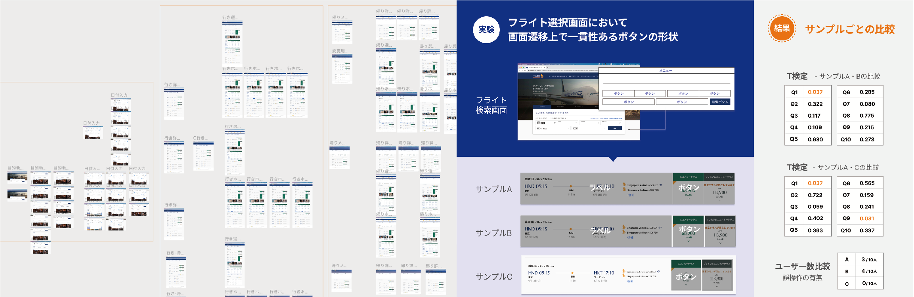
グローバル展開サービスにおける情報提示の一貫性について
渡邊 亜未 -
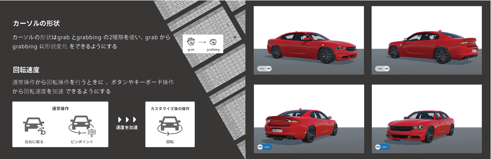
Eコマースでの3Dコンフィギュレータの有用性
- カーソル操作におけるにおけるユーザビリティ向上 -
古橋 優吾 -
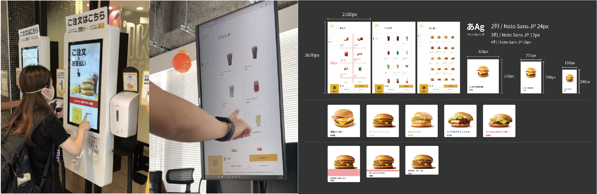
UIの情報提示の違いがユーザーの心理に及ぼす影響
- セルフオーダーのスキャナビリティを中心に -
松本 幹大 -
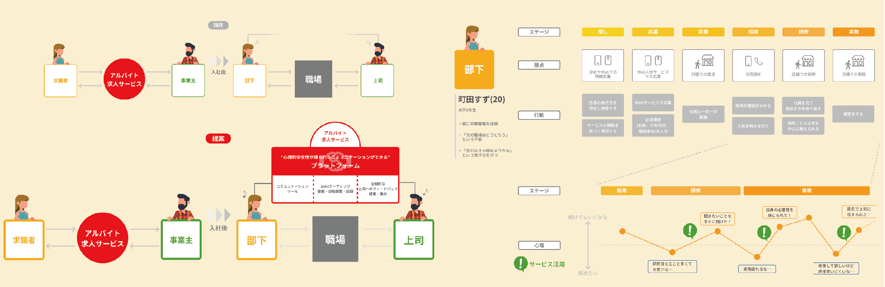
若者のアルバイト早期離職に対する心理的サポートについて
佐分 わか奈 -
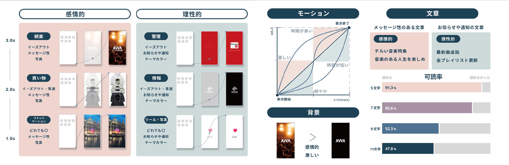
待ち時間の認知における情報提示の有用性について
- スプラッシュスクリーン活用の試み -
大森 すみれ -
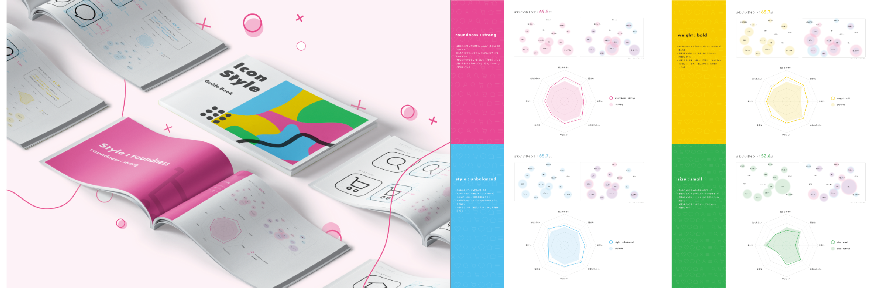
UIエレメントにおけるかわいい感性の活用について
谷尾 美亜 -
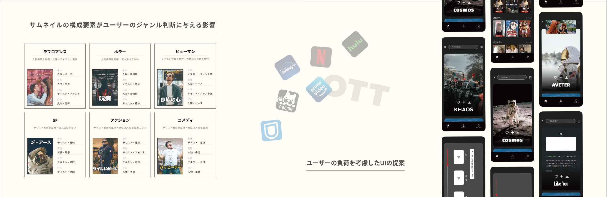
情報表現がユーザーの認知及び負荷に与える影響
- サムネイルのUI的特徴を中心に -
上嶋 優輝 -
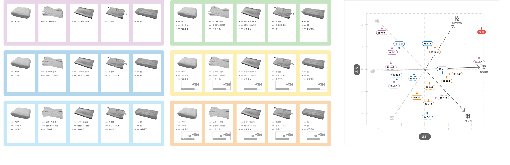
オノマトペを用いた情報提示による質感認知への影響
海野 恵 -

地域観光の情報発信におけるタッチポイントの検討
- 若者のSNS利用特徴の調査を中心に -
益子 美菜実 -
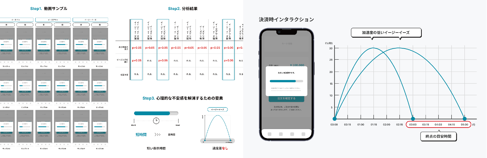
オンライン決済における心理的な不安感解消に関する研究
- インタラクションの待ち時間について -
全 玲奈 -
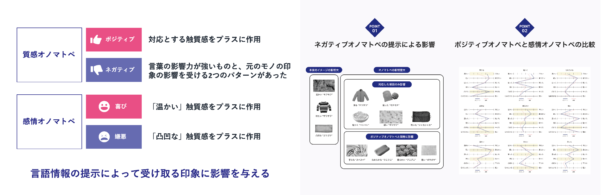
擬態語を用いた質感印象への影響度
- 質感・感情オノマトペの提示による印象への作用の違い -
秋葉 美怜 -
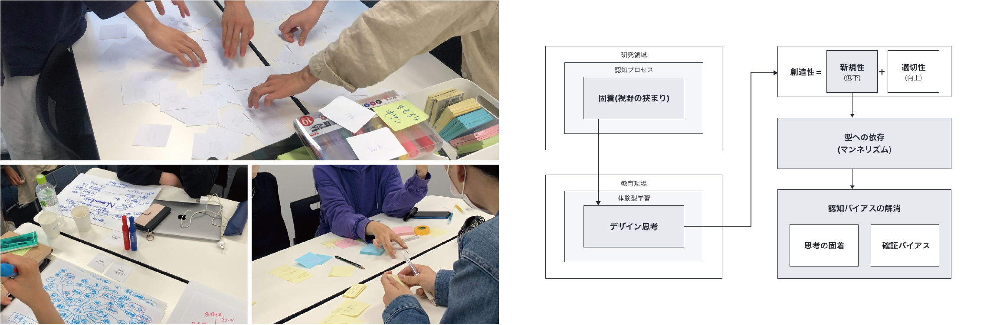
創造力を育む体験型学習におけるバイアス解消の試み
安西 竜晟